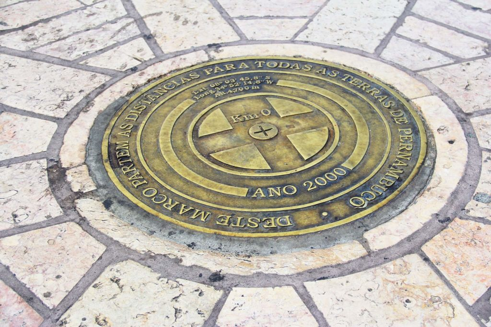
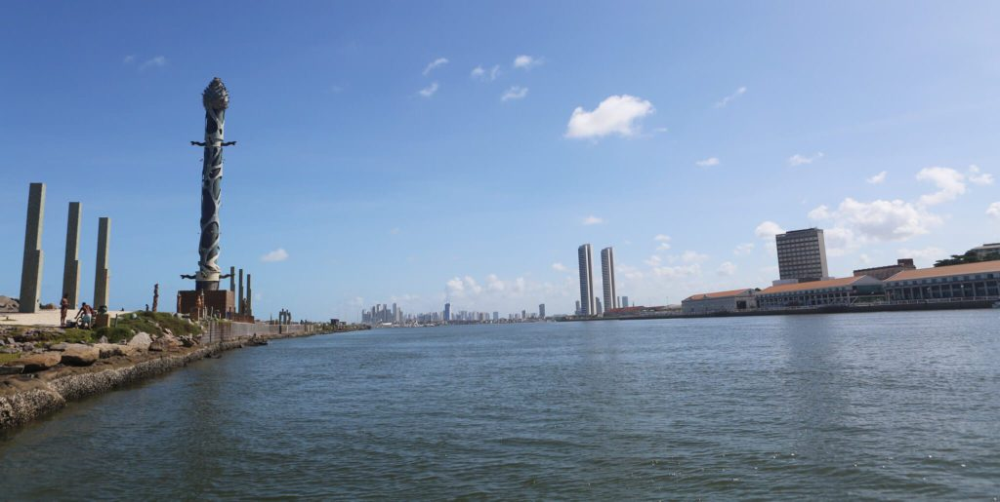
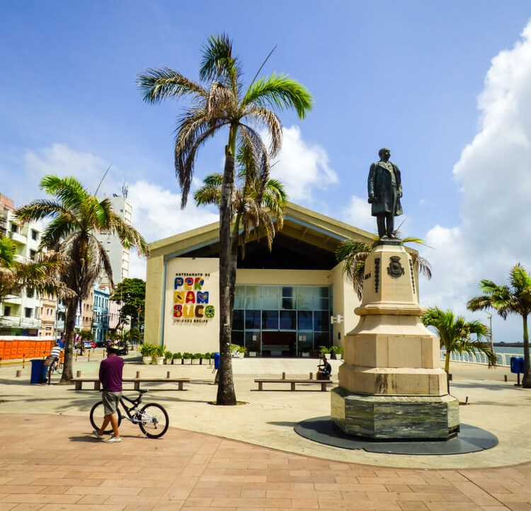
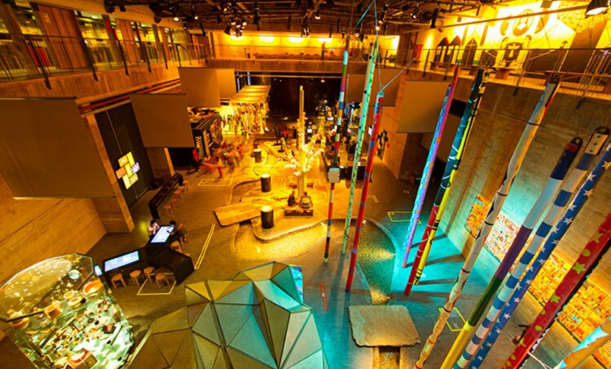

Área histórica de Recife de onde partem os caminhos de Pernambuco
Parte da região histórica do Recife Antigo, a praça é o local de onde se inicia a medição das distâncias das estradas do estado

Navegue pelo conteúdo
A Praça do Marco Zero não é apenas o epicentro cultural de Recife, mas também o início de todos os caminhos de Pernambuco. Neste artigo, vamos te contar um pouco do que rola no local e nos arredores dessa região histórica e ao mesmo tempo contemporânea, por ser tão frequentada e amada pelos moradores da cidade.
Praça Barão do Rio Branco
Conhecida pelo seu nome popular – Praça do Marco Zero, na verdade, é um apelido – o local se chama Praça Barão do Rio Branco e está localizada no Bairro do Recife, o Centro Histórico da cidade, que também atende por outra alcunha, mais popular: Recife Antigo.
Além de dar o nome oficial à praça, o Barão do Rio Branco também está representado no local por uma estátua em bronze de 2,80m de altura, feita pelo escultor francês Félix Charpentier.
O nome de Praça do Marco Zero se popularizou por conta da instalação, em 31 de janeiro de 1938, do Marco Zero de Recife, doado à cidade pelo Automóvel Clube de Pernambuco. A placa redonda posicionada na praça simboliza o centro geográfico de onde partem as medições para todas as estradas de Pernambuco.
Onde fica a Praça do Marco Zero
A Praça Barão do Rio Branco, ou Praça do Marco Zero, está localizada na Av. Alfredo Lisboa, sem número.
Rosa dos Ventos de Cícero Dias
Em 1999, a Praça do Marco Zero passou por uma transformação drástica. A estátua do Barão do Rio Branco e o Marco Zero foram mudados de lugar, um pouco mais para o canto da praça.
Com isso, além de ser o centro geográfico de Pernambuco, o Marco Zero passou a ser o centro de uma obra de arte do célebre pintor pernambucano Cícero Dias, um dos mais importantes nomes do modernismo brasileiro: a Rosa dos Ventos.
Com 20 metros de diâmetro e formada por pedras de quartzo e granito com pigmentação colorida, a Rosa dos Ventos de Cícero Dias se tornou mais uma das grandes atrações da Praça do Marco Zero.
Parque das Esculturas Francisco Brennand
De frente para a Praça do Marco Zero, sobre um dique natural que protege um estuário do Rio Capibaribe, foi construído em 2000 o Parque das Esculturas Francisco Brennand, que se tornou uma das maiores atrações turísticas da cidade.
O parque reúne dezenas de obras do artista plástico Francisco Brennand. A mais imponente delas é a Torre de Cristal, de 32 metros de altura, inspirada em uma flor descoberta pelo paisagista Roberto Burle Marx.
Para chegar ao Parque das Esculturas, é preciso fazer uma travessia de barco pelo Rio Capibaribe, com partida e retorno pela Praça do Marco Zero.
Caixa Cultural Recife
Em um prédio de estilo neoclássico datado de 1912 e projetado para ser a sede do Bank of London & South America Limited, funciona hoje a Caixa Cultural Recife.
Em 1977, o prédio foi adquirido e se tornou sede da Bolsa de Valores de Pernambuco e da Paraíba até 2006, quando foi comprado pela Caixa Econômica Federal.
E justamente no ano do centenário do prédio, em 2021, foi inaugurada a Caixa Cultural Recife, que conta com galerias de arte, sala multimídia, duas salas para oficinas de arte-educação e um teatro com 96 lugares.

Associação Comercial de Pernambuco
Fundada em 1839, a Associação Comercial De Pernambuco funciona, de forma ininterrupta, no belíssimo prédio de arquitetura clássico-eclética localizado de frente para a Praça do Marco Zero e ao lado da Caixa Cultural Recife.
A construção imponente é tombada pelo Instituto do Patrimônio Histórico e Artístico Nacional (IPHAN) e é pano de fundo, ao lado de seu prédio vizinho, para as fotos mais clássicas que se podem tirar da região, por sua beleza e importância arquitetônica.
Centro de Artesanato de Pernambuco
Inaugurado em 2012, o Centro de Artesanato de Pernambuco rapidamente se tornou uma das referências da Praça do Marco Zero, tanto para turistas quanto para os moradores de Recife.
Localizado em um amplo galpão de 2,5 mil m², o espaço conta corredores amplos, vista privilegiada para o mar e mais de 25 mil peças à venda, feitas à mão por cerca de 1,8 mil artesãos de todos os cantos de Pernambuco.
O centro conta com divisões como sala de estar, quarto, sala de jantar e outros cômodos de uma casa, para que os visitantes possam visualizar como as peças artesanais poderiam ficar em seus lares. E as peças são feitas de matérias-primas das mais diversas, como renda, madeira, metal, cerâmica e vidro, entre outros.
Museu Cais do Sertão
Localizado em uma região de antigos armazéns do Porto do Recife, mais precisamente no Armazém 10, muito próximo da Praça do Marco Zero, o Museu Cais do Sertão conta com exposições temporárias e permanentes, que sempre trazem com referências à cultura do Sertão Nordestino, em especial ao grande homenageado do espaço: o músico Luiz Gonzaga.
Com uma arquitetura inovadora, o espaço busca oferecer aos seus visitantes uma experiência interativa e sensorial, numa imersão à cultura sertaneja do Nordeste em pleno litoral. E também oferece diversos tipos de cursos, aulas e palestras.